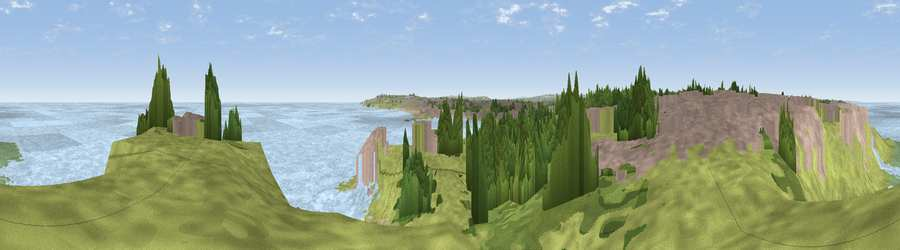

Viewpoint near Tynemouth
#13711 in England · top 25% of its area beats it · near TynemouthWhere it is
The exact computed spot (NZ 37225 69375). Click the marker for map links.
The view, rendered

A 360° render of this exact spot computed from the terrain model, tree cover and land cover — summer colours, afternoon light, calibrated against photographs of famous viewpoints. Real trees, hedges and buildings will differ in detail.
The panorama
Grey silhouette: terrain skyline in each direction (720 bearings, Earth curvature and refraction included). Dashed green: skyline with trees (+15 m) and buildings (+8 m) as obstacles. Blue strip: how far the ground is visible on each bearing.
Where the view opens
Wedge length = distance to the farthest visible ground on that bearing (vegetation-aware). Rings at 10, 25 and 50 km.
What fills the view
37% water · 23% grassland · 18% built-up · 14% woodland · 7% bare ground ·
Angular shares of the visible panorama (visual magnitude), not map area. Landscape diversity 0.66 (0–1 Shannon).
Key numbers
More beautiful places nearby
The staircase of upgrades: each row has a higher view potential than everything closer. Driving times are estimates from straight-line distance, calibrated against real road routing — check an actual route before setting out.
| Place | Direction | Drive | Score |
|---|---|---|---|
| Viewpoint near Whitburn | SSE · 5 km | ~12 min | 67.3 |
| White Hill | SW · 13 km | ~24 min | 69.8 |
| Tunstall Hills | S · 15 km | ~27 min | 74.2 |
| Penshaw Hill | SSW · 15 km | ~28 min | 75.1 |
| Viewpoint near Houghton-le-Spring | S · 19 km | ~32 min | 76.0 |
| Viewpoint near Sunniside | SW · 19 km | ~32 min | 77.6 |
| Pontop Pike | SW · 28 km | ~44 min | 77.8 |
| Viewpoint near Longframlington | NW · 43 km | ~62 min | 79.5 |
55.01754, -1.41937 · source: screening · position refined by local search. Computed location — check access rights before visiting.